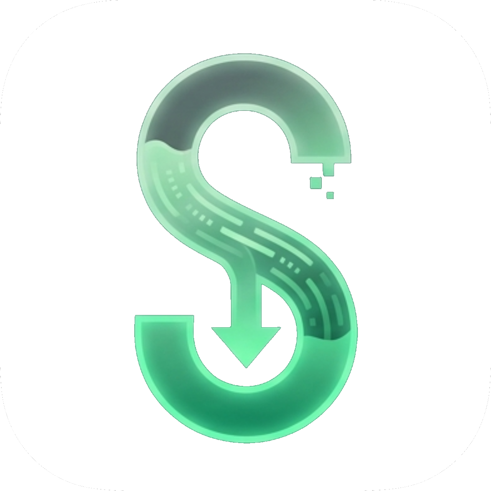

. . .
Queue 0

Advanced Search
Paste a page that won't download normally. Siphon opens it in the background and watches for the hidden video/audio stream (.m3u8 / .mpd) that the page loads. Sign-ins stay in the finder until you Clear finder data.